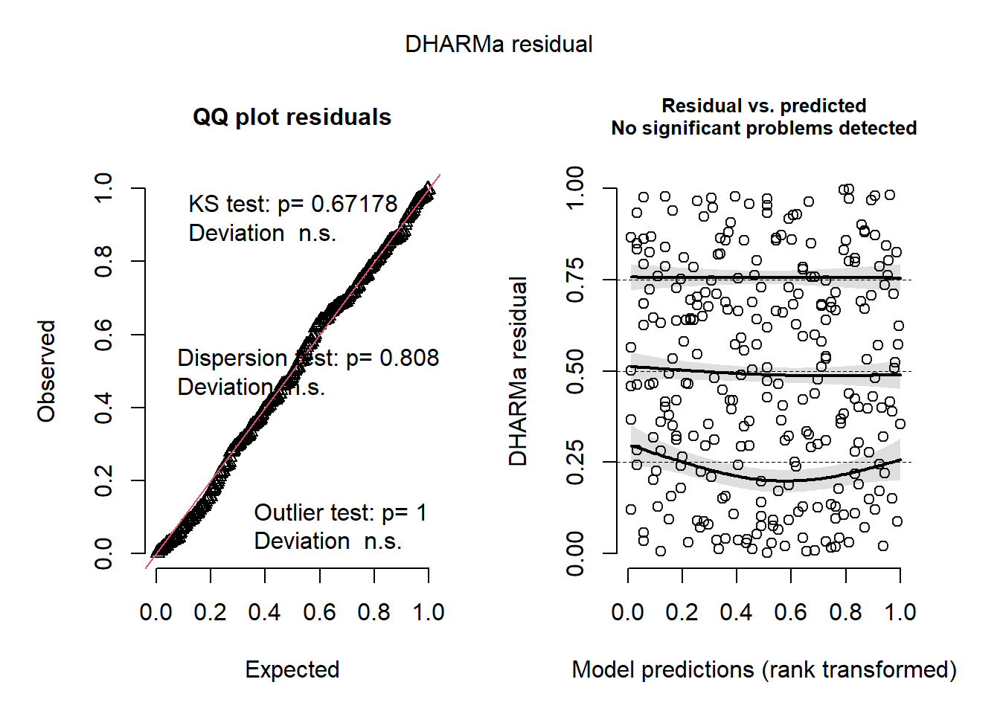

7 Generalized Additive Models applied on parasites of Argentine hake
7.1 Parasites of Argentine hake in the Argentine Sea
Sardella and Timi (2004) は、4か所のアルゼンチン沖に生息するメルルーサ(hake, Merluccius hubbsi)の寄生虫を調べ、それをもとにメルルーサの個体群を分別することができるかを調べた。メルルーサは乱獲によって激減しており、メルルーサがどの個体群から来たものなのかを識別することは個体群の維持にとって重要である。
魚334匹が4か所(アルゼンチン-ウルグアイ間、サン・ジョージ湾、パタゴニアン大陸棚、サン・マティアス湾)でトロール網によって捕獲され、26種の寄生虫が発見された。本章では、Elytrophalloides oatesiという吸虫の有無を二項分布のGAMによってモデリングする。リサーチクエスチョンは、吸虫の有無が魚のサイズ、性別、捕獲場所によって影響を受けるかである。
7.2 The variables
データに含まれる変数は以下のとおりである。今回は南にある3箇所(アルゼンチン-ウルグアイ間以外)のみのデータを用い、分析対象とした魚は278匹である。
Month: 捕獲した月
Year: 捕獲した年
Area: 捕獲した場所
ID: 個体ID
Length: 全長
Weight: 重さ
Sex: 性別
Worms: 寄生虫の有無
データは以下の通り。
7.3 Data exploration
モデルでは、月、年、場所、魚の全長と重さ、性別が寄生虫の有無に影響するかを調べたい。
図7.1は月と年以外の変数の関係を図示したものである。魚の全長と重さは非常に強い相関(0.894)があることが分かる。多重共線性の問題を避けるため、本章では全長のみを用いることにする。また、性別と体長、捕獲場所と体長に強い関連がある可能性もあるが、本データではそこまで顕著ではない。
図7.1: Pairwise plot of variables.
観察年と捕獲場所の関係を見ると、サンジョージ湾は1998年のみで、パタゴニアン大陸棚とサンマティアス湾は1999年のみで捕獲されていることが分かる。これは、年と捕獲場所の両方を説明変数として含めることが適切でないことを示している。今回は捕獲場所のみを用いる。
Par %>%
expand(Area, Year) %>%
left_join(Par %>%
group_by(Area, Year) %>%
summarise(N = n())) %>%
replace_na(list(N = 0))体長、捕獲場所、性別の3次の交互作用がある可能性もあるためこれらの関係を図示する(図7.2)。図から、サンマティアス湾では4個体しか寄生虫に感染していないことが分かり、3次の交互作用を入れるにはサンプルサイズが少ないことが分かる。
Par %>%
ggplot(aes(x = Length, y = Worms))+
geom_point(shape = 1, size = 2, stroke = 1)+
theme_bw()+
theme(aspect.ratio = 1)+
facet_rep_grid(Sex~Area, repeat.tick.labels = TRUE)図7.2: Prevalence of E. oatesi plotted versus length for both sexes and all zones.
7.4 Brainstorming
以上から、ここでは寄生虫の有無に体長、捕獲場所、性別が及ぼす影響を検討する。目的変数は二値変数なので二項分布(正確にはベルヌーイ分布)に従うとするモデリングをする。
まず、交互作用を含まない一般化線形モデル(GLM)を考える。モデル式は以下のようになる。なお、\(logit(\pi_i) = log \Bigl( \frac{\pi_i}{1-\pi_i} \Bigl)\)である。
\[ \begin{aligned} Worms_i &\sim Bin(\pi_i)\\ E(Worms_i) &= \pi_i, \;\; var(Worms_i) = (1-\pi_i) \times \pi_i\\ logit(\pi_i) &= \alpha + \beta_1 \times Length_i + \beta_2 \times Sex_i + \beta_3 \times Area_i \end{aligned} \tag{7.1} \]
また、体長と性別の交互作用項を含むGLMを考えることもできる。
\[ \begin{aligned} Worms_i &\sim Bin(\pi_i)\\ E(Worms_i) &= \pi_i, \;\; var(Worms_i) = (1-\pi_i) \times \pi_i\\ logit(\pi_i) &= \alpha + \beta_1 \times Length_i + \beta_2 \times Sex_i + \beta_3 \times Length_i \times Sex_i + \beta_4 \times Area_i \end{aligned} \tag{7.2} \]
続いて、寄生虫の有無に対する体長の効果が非線形であるかを検討するため、体長のsmootherを含むGAMを考えることができる。
\[ \begin{aligned} Worms_i &\sim Bin(\pi_i)\\ E(Worms_i) &= \pi_i, \;\; var(Worms_i) = (1-\pi_i) \times \pi_i\\ logit(\pi_i) &= \alpha + f(Length_i) + \beta_1 \times Sex_i + \beta_2 \times Area_i \end{aligned} \tag{7.3} \]
また、性別によってsmootherが異なるモデルを考えることもできる。
\[
\begin{aligned}
Worms_i &\sim Bin(\pi_i)\\
E(Worms_i) &= \pi_i, \;\; var(Worms_i) = (1-\pi_i) \times \pi_i\\
logit(\pi_i) &= \alpha + f_1(Length_i) + f_2(Length_i) + \beta_1 \times Sex_i + \beta_2 \times Area_i
\end{aligned} \tag{7.4}
\]
以下では、式(7.3)や式(7.4)のモデリングを行う前に、まずは体長のsmootherのみを含むモデル(\(M_1\))を実行し、他の説明変数を含めたり性別ごとのsmootherを仮定するモデル(\(M_2\)、\(M_3\)、\(M_4\))と比較を行うことで、他の変数を加えたときにsmootherがどのように変わっていくかを検討する。
\[ \begin{aligned} M_1: logit(\pi_i) &= \alpha + f(Length_i)\\ M_2: logit(\pi_i) &= \alpha + f(Length_i) + \beta_1 \times Sex_i \\ M_3: logit(\pi_i) &= \alpha + f_1(Length_i) + f_2(Length_i) + \beta_1 \times Sex_i \\ M_4: logit(\pi_i) &= \alpha + f_1(Length_i) + f_2(Length_i) + \beta_1 \times Sex_i + \beta_2 \times Area_i \end{aligned} \tag{7.5} \]
7.5 Applying binomial GAM
まずはsmootherのみを含む\(M_1\)(M7_1)のモデリングを行う。
モデルの結果は以下の通り。smootherは自由度6.81であり、5%水準で有意である。モデルが説明できている逸脱度はわずか10.6%である。
##
## Family: binomial
## Link function: logit
##
## Formula:
## Worms ~ s(Length)
##
## Parametric coefficients:
## Estimate Std. Error z value Pr(>|z|)
## (Intercept) -0.2886 0.1346 -2.145 0.0319 *
## ---
## Signif. codes: 0 '***' 0.001 '**' 0.01 '*' 0.05 '.' 0.1 ' ' 1
##
## Approximate significance of smooth terms:
## edf Ref.df Chi.sq p-value
## s(Length) 6.814 7.909 27.41 0.000511 ***
## ---
## Signif. codes: 0 '***' 0.001 '**' 0.01 '*' 0.05 '.' 0.1 ' ' 1
##
## R-sq.(adj) = 0.109 Deviance explained = 10.6%
## UBRE = 0.28497 Scale est. = 1 n = 278ベルヌーイ分布のモデルでは残差とモデルの予測値をプロットしたときに以下のような2本のバンドのようなプロットが得られる(図7.3)。それぞれの線は目的変数の0/1に対応する。これをもとにパターンを検出することは難しい。
data.frame(resid = resid(M7_1, type = "pearson"),
fitted = fitted(M7_1, type = "response")) %>%
ggplot(aes(x = fitted, y = resid))+
geom_point(alpha = 0.5)+
geom_hline(yintercept = 0)+
scale_y_continuous(breaks = seq(-3,3,1))+
theme_bw()+
theme(aspect.ratio = 1)+
labs(x = "Fitted values", y = "Pearson residuals")図7.3: Fitted values versus Pearson residuals for M7_1
体長や性別、捕獲場所と残差の関係をプロットしたのが図7.4である。体長、捕獲場所と残差の関係には明確なパターンがありそう。
data.frame(resid = M7_1$resid,
Length = Par$Length,
Sex = Par$Sex,
Area = Par$Area) -> resid7_1
resid7_1 %>%
ggplot(aes(x = Length, y = resid))+
geom_point(alpha = 0.5)+
geom_hline(yintercept = 0)+
scale_y_continuous(breaks = seq(-10,12,2))+
theme_bw()+
theme(aspect.ratio = 1)+
labs(x = "Length", y = "Pearson residuals") -> p1
resid7_1 %>%
ggplot(aes(x = Sex, y = resid))+
geom_boxplot(alpha = 0.5)+
geom_hline(yintercept = 0)+
scale_y_continuous(breaks = seq(-10,12,2))+
theme_bw()+
theme(aspect.ratio = 1)+
labs(x = "", y = "Pearson residuals") -> p2
resid7_1 %>%
ggplot(aes(x = Area, y = resid))+
geom_boxplot(alpha = 0.5)+
geom_hline(yintercept = 0)+
scale_y_continuous(breaks = seq(-10,12,2))+
theme_bw()+
theme(aspect.ratio = 0.5)+
labs(x = "", y = "Pearson residuals") -> p3
(p1+p2)/p3 + plot_layout(heights = 12)図7.4: Pearson residuals versus covariates.
推定されたsmootherは以下の通り(図7.5)。
residM7_1 <- data.frame(resid = smooth_estimates(M7_1, data = Par)$est
+ resid(M7_1, type = "pearson"),
Length = Par$Length)
draw(M7_1)+
geom_point(data = residM7_1,
aes(x = Length, y = resid))+
theme_bw()+
theme(aspect.ratio = 1)図7.5: Estimated smoother for length obtained by model M7_1. The grey area is the 95% point-wise confidence interval.
fitted_values(M7_1, data = data.frame(Length = seq(29.5, 57, length = 100))) %>%
ggplot(aes(x = Length, y = fitted))+
geom_line()+
geom_ribbon(aes(ymin = lower, ymax = upper),
fill = "grey", alpha = 0.4)+
geom_point(data = Par,
aes(y = Worms))+
theme_bw()+
theme(aspect.ratio = 1)+
labs(y = "Probability of presence of worms")図7.6: Estimated smoother for length obtained by model M1. The smoother is plotted on the predictor scale (between 0 and 1). The dots are the observed values for the response variable.
同様に、式(7.5)の\(M_2\)(M7_2)から\(M_4\)(M7_4)もモデリングする。
M7_2 <- gam(Worms ~ s(Length) + Sex, data = Par,
family = binomial)
M7_3 <- gam(Worms ~ s(Length, by = Sex) + Sex,
data = Par, family = binomial)
M7_4 <- gam(Worms ~ s(Length, by = Sex) + Sex + Area,
data = Par, family = binomial)まず、\(M_2\)(M7_2)でもsmotherは変わらず5%水準で有意である。自由度も6.81でM7_1とほぼ同じである。一方で、性別は有意に影響していない。
##
## Family: binomial
## Link function: logit
##
## Formula:
## Worms ~ s(Length) + Sex
##
## Parametric coefficients:
## Estimate Std. Error z value Pr(>|z|)
## (Intercept) -0.2284 0.1763 -1.295 0.195
## SexMale -0.1448 0.2751 -0.526 0.599
##
## Approximate significance of smooth terms:
## edf Ref.df Chi.sq p-value
## s(Length) 6.81 7.906 25.3 0.00117 **
## ---
## Signif. codes: 0 '***' 0.001 '**' 0.01 '*' 0.05 '.' 0.1 ' ' 1
##
## R-sq.(adj) = 0.105 Deviance explained = 10.7%
## UBRE = 0.29118 Scale est. = 1 n = 278続いて、\(M_3\)(M7_3)では、メスのsmootherが自由度8.21、オスのsmootherが自由度2.75でオスのみ5%水準で有意だった。性別は変わらず有意に影響していない。
##
## Family: binomial
## Link function: logit
##
## Formula:
## Worms ~ s(Length, by = Sex) + Sex
##
## Parametric coefficients:
## Estimate Std. Error z value Pr(>|z|)
## (Intercept) -0.05606 0.36973 -0.152 0.879
## SexMale -0.45125 0.44143 -1.022 0.307
##
## Approximate significance of smooth terms:
## edf Ref.df Chi.sq p-value
## s(Length):SexFemale 8.215 8.569 11.73 0.18414
## s(Length):SexMale 2.752 3.468 14.15 0.00421 **
## ---
## Signif. codes: 0 '***' 0.001 '**' 0.01 '*' 0.05 '.' 0.1 ' ' 1
##
## R-sq.(adj) = 0.123 Deviance explained = 14%
## UBRE = 0.27561 Scale est. = 1 n = 278M7_3で推定されたsmootherは以下の通り(図7.7)。オスのsmootherはメスのsmootherと大きく異なることが見て取れる。
図7.7: Estimated length smoothers obtained by model M7_3 for the females (left) and males (right).
最後に、捕獲場所を追加したM7_4ではいずれの性のsmootherも自由度が1だと推定された。
##
## Family: binomial
## Link function: logit
##
## Formula:
## Worms ~ s(Length, by = Sex) + Sex + Area
##
## Parametric coefficients:
## Estimate Std. Error z value Pr(>|z|)
## (Intercept) 0.32148 0.23127 1.390 0.1645
## SexMale 0.03758 0.32636 0.115 0.9083
## AreaSanJorge 0.57227 0.32169 1.779 0.0752 .
## AreaSanMatias -3.42020 0.59121 -5.785 7.25e-09 ***
## ---
## Signif. codes: 0 '***' 0.001 '**' 0.01 '*' 0.05 '.' 0.1 ' ' 1
##
## Approximate significance of smooth terms:
## edf Ref.df Chi.sq p-value
## s(Length):SexFemale 1 1 3.672 0.055336 .
## s(Length):SexMale 1 1 11.815 0.000587 ***
## ---
## Signif. codes: 0 '***' 0.001 '**' 0.01 '*' 0.05 '.' 0.1 ' ' 1
##
## R-sq.(adj) = 0.323 Deviance explained = 29.6%
## UBRE = 0.011251 Scale est. = 1 n = 278推定されたsmootherを見ても、直線的であることが分かる。
図7.8: Estimated length smoothers obtained by model M7_4 for the females (left) and males (right).
AICでモデル比較を行うと、M7_4が最も予測がよいことが分かる。
なぜ説明変数に捕獲場所を加えるとsmootherが直線的になるのだろうか。第7.3節で見たように、捕獲場所と体長にはそこまで強い相関はなかったことから、多重共線性によるものではないと考えられる。
M7_4の結果を見ると、サン・マティアス湾の係数が-3.42と非常に小さな値になっていることが分かる。これは、サン・マティアス湾では寄生虫に感染した魚がほとんどいなかったためである(図7.2)。
M7_1から推定された回帰曲線の結果(図7.9)を見ても、サン・マティアス湾のデータにかなり引っ張られていることが分かる。
fitted_values(M7_1, data = data.frame(Length = seq(29.5, 57, length = 100))) %>%
ggplot(aes(x = Length, y = fitted))+
geom_line()+
geom_ribbon(aes(ymin = lower, ymax = upper),
fill = "grey", alpha = 0.4)+
geom_jitter(data = Par,
shape = 21,
aes(y = Worms, fill = Area),
height = 0.05,
alpha = 0.4)+
scale_fill_manual(values = c("white","white","black"))+
theme_bw()+
theme(aspect.ratio = 1)+
labs(y = "Probability of presence of worms")図7.9: Fitted values from model M1. The filled circles are from the San Matias area.
M7_4では捕獲場所が説明変数に加わったことで、サン・マティアス湾のデータによって多くなっていた0が説明され、smootherがより直線的になったのである。
よって、以下のようにsmootherを含まないGLMを考える。
\[
M_5: logit(\pi_i) = \alpha + \beta_1 \times Length_i + \beta_2 \times Sex_i + \beta_3 \times Length_i \times Sex_i + \beta_4 \times Area_i
\]
Rでは以下のように実行する。
AICを比べると、M7_5はその他のモデルよりも予測精度が高いことが分かる。M7_4とはほとんど同じモデルであることも分かる。
検定を行うと、交互作用項が有意であることが分かる。
モデルの結果を図示すると以下のようになる(図7.10)
library(ggeffects)
ggpredict(M7_5,
terms = c("Length[29.5:57,by=0.2]","Sex", "Area")) %>%
rename(Length = x, Sex = group, Area = facet) %>%
data.frame() %>%
ggplot(aes(x = Length, y = predicted))+
geom_line()+
geom_ribbon(aes(ymin = conf.low, ymax= conf.high),
fill = "grey", alpha = 0.6)+
geom_point(data = Par,
aes(y = Worms),
shape = 1,
size = 2,
stroke = 1)+
facet_rep_grid(Sex~Area,
repeat.tick.labels = TRUE)+
theme_bw()+
theme(aspect.ratio = 0.7)+
labs(y = "Probability of presence of worms")図7.10: Model fit fot M7_5
DHARMaパッケージによるモデルチェックを行っても、モデルに問題はなさそう。

7.6 Discussion
ここまでの例では、入れるべき共変量が含まれていないと推定されるsmootherが大きく異なることが示された。生物学的な知識に基づき、結果が妥当であるかを常に検討することが重要である。
7.7 What to present in a paper
本章では26種いた寄生虫の内1種のみの結果を用いた。もし、すべての寄生虫について1つのGAMで分析するのであれば、多変量分布を用いた分析が妥当だろう。
もし本章のように1種の寄生虫の結果の実を論文で報告するとすれば、以下のことに言及する必要がある。
- 序論で議論されている生物学的観点から見たリサーチクエスチョン
- データ収集方法と分析に使用したモデルの詳細
- データ探索のまとめとモデルの推定結果を示すグラフ
- 結果からどのような結論が導けるか
- データの独立性の有無。例えば、同じトロール網によってとらえられた個体が同じ寄生虫を持つ確率が高いとすれば、GAMM(一般化加法混合モデル)を適用する必要があるかもしれない。